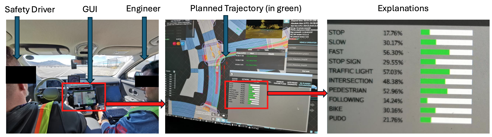
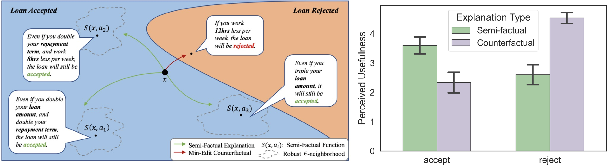
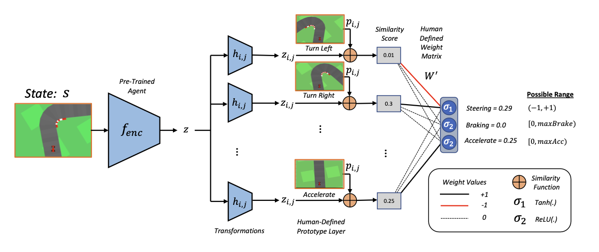
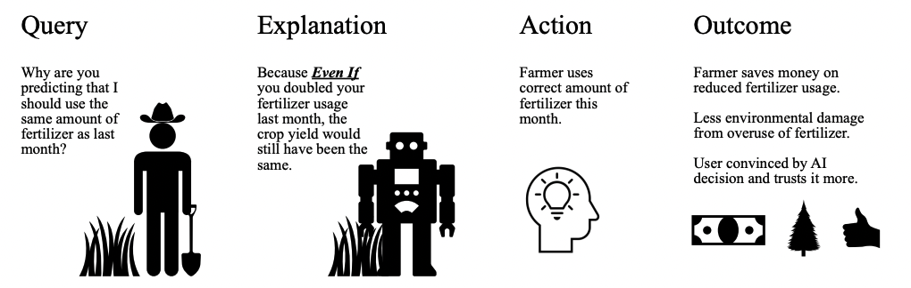
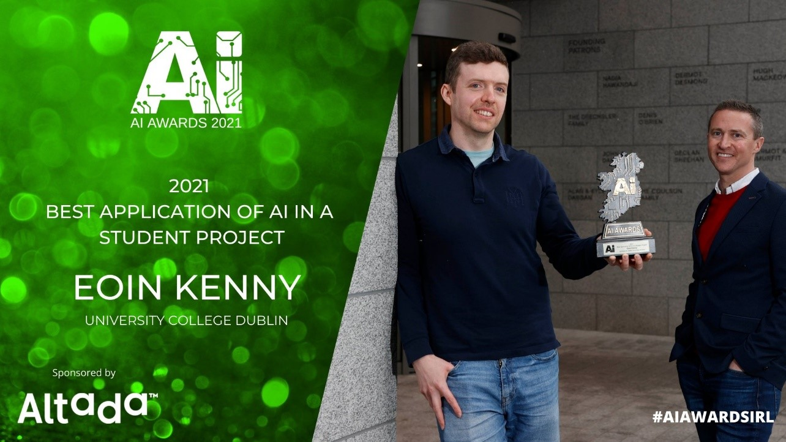

About
Hello, I am a Senior AI researcher at J.P. Morgan Chase, London, in their Trustworthy AI research group. Prior to this, I did my Ph.D. at University College Dublin with Mark Keane, and Postdoc at MIT with Julie Shah. My vision for Explainable AI is that we must transition from developing XAI systems without clear objectives, to rigorously prioritising purpose-driven XAI that delivers true clarity and indispensable utility to the practitioners it serves.
My contributions which I am most proud of are in interpretable reinforcment learning with self-driving cars, and contrastive explanation in recourse.
In my future research, I plan to focus on developing explainable systems which focus on purpose-driven evaluation, and have several papers in the works moving towards this vision.
Work Experience
- J.P. Morgan, Senior Associate AI Researcher, 2024 (onwards)
- Postdoctoral Associate, MIT, 2022-2024
- Internship, Motional, 2023-2024
Education
- Ph.D. in Computer Science, UCD, 2022
- M.S. in Computer Science, UCD, 2019
- M.A in Musicology & Performance, Maynooth University, 2013
- BMus, Maynooth University, 2010
Selected Publications (from Google Scholar)
Explainable deep learning improves human mental models of self-driving cars
TL;DR: We show that concept-bottlneck models are useful in self-driving cars during deployment to help humans better understand the model's decision making process.
Eoin M. Kenny, Akshay Dharmavaram, Sang Uk Lee, Tung Phan-Minh, Shreyas Rajesh, Yunqing Hu, Laura Major, Momchil S Tomov, Julie A. Shah
The Utility of "Even if" Semifactual Explanation to Optimize Positive Outcomes
TL;DR: We show that semifactuals are more useful than conterfactuals when a user gets a positive outcome from an AI system.
Eoin M. Kenny, Weipeng Huang
Towards Interpretable Deep Reinforcement Learning with Human-Friendly Prototypes
TL;DR: We build the first inherently interpretable, general, well performaning, deep reinforcement learning algorithm.
Eoin M. Kenny, Mycal Tucker, and Julie A. Shah
[ICLR 2023] * Spotlight Presentation (top 25% of accepted papers)
On generating plausible counterfactual and semi-factual explanations for deep learning
TL;DR: We introduce the AI world to semi-factuals, and show a plausible way to generate them (and counterfactuals) using a framework called PIECE.
Eoin M. Kenny and Mark T. Keane
Bayesian Case-Exclusion and Explainable AI (XAI) for Sustainable Farming

TL;DR: We show how to accuractly predict grass growth and offer "good" explanations to Irish Dairy Farmers.
Eoin M Kenny, Elodie Ruelle, Anne Geoghegan, Mohammed Temraz, Mark T Keane
[IJCAI 2020] Sister Conference Best Paper Track * Best Paper Award at ICCBR 2019.
Explaining black-box classifiers using post-hoc explanations-by-example: The effect of explanations and error-rates in XAI user studies

TL;DR: We find that nearest neighbor exemplar-based explanation lead people to view classifiction errors as being “less incorrect”, moreover they do not effect trust.
Eoin M Kenny, Courtney Ford, Molly Quinn, Mark T Keane
Media
National AI Awards Ireland
TL;DR: I won the best application of AI in a student project for my work in Explainable AI in Smart Agriculture.
International Conference on Case-Based Reasoning
TL;DR: I won the best paper award at ICCBR 2019 which was themed on Explainable AI for my paper regarding Smart Agriculture.
Invited Talks (not exhaustive)
- Jun 2023, ML Labs at UCD: One way to do a Ph.D. (and postdoc)
- Dec 2022, Navy Centre for Applied Research in Artificial Intelligence: Interpretable Deep Reinforcement Learning
- Mar 2022, Imperial College London: Explaining Black-box algorithms
- Feb 2022, Robert Gordon University: On the utility of explanation-by-example
- Nov 2019, KBC Data Science Bootcamp: Explaining Artificial Intelligence Black-Box Systems
Academic Services
- Reviewer, NeurIPS 2021-2023
- Reviewer, ICLR 2023
- Reviewer, AAAI 2021
- Reviewer, ICML 2022-2023
- Reviewer, Artificial Intelligence Journal 2021-2022